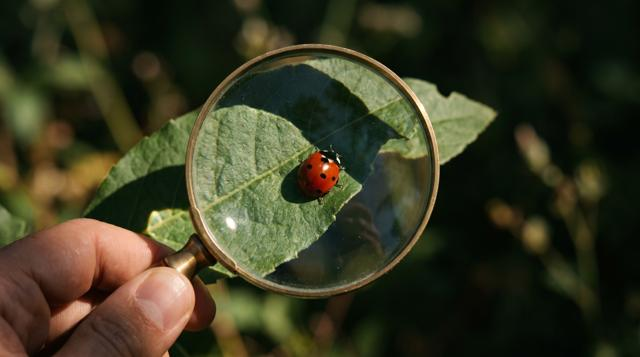
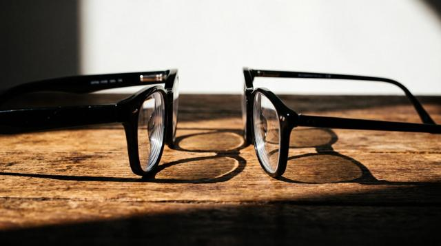

🔥 燒葉子任務：放大鏡能把陽光變成「火」嗎？
乙班已經成功了！甲班今天也來挑戰。
任務步驟
- 到太陽照得到的水泥地，把乾葉子放在地上
- 放大鏡對著太陽，讓光照到葉子上
- 慢慢拿高、拿低，找到最小最亮的光點
- 手不要動，數 1、2、3……等它冒煙！
⚠️ 安全規則
👀 絕對不能透過放大鏡看太陽
🙅 光點不能對著人、皮膚、衣服
🪣 旁邊放一桶水，結束後把葉子泡進水裡
🌿 不要在乾草地上做
👀 絕對不能透過放大鏡看太陽
🙅 光點不能對著人、皮膚、衣服
🪣 旁邊放一桶水，結束後把葉子泡進水裡
🌿 不要在乾草地上做
先猜猜看 🤔挑戰
換成近視眼鏡（凹透鏡），也能燒葉子嗎？
🙅 不行！凹透鏡中間薄，會把光散開，地上只有一圈大大、暗暗的光，沒有亮點，所以燒不起來。
🔥 放大鏡（凸透鏡）中間厚，把光聚在一點，所以很熱。
🔥 放大鏡（凸透鏡）中間厚，把光聚在一點，所以很熱。
⏱️ 分兩組，輪流闖兩站
時間到會響鈴，兩組交換。每一站都要寫記錄單。
🟠 第一組
A站 🔍 放大凸透鏡・看超小字
🔵 第二組
B站 🔭 縮小凹透鏡・東西變小
8:00
🔍 A站：放大站 凸透鏡
中間厚、邊緣薄的鏡片，會讓東西看起來變大。

任務：讀出超小字
- 拿一張「超小字任務卡」
- 放大鏡先貼近卡片，再慢慢拿遠
- 找到字最大、最清楚的位置
- 把字寫在記錄單上 ✏️
超小字答案（老師按一下才揭曉）
🔵 1～2 號字最大 🟠 3～4 號比較小 ⭐ 5～6 號超級小
🔭 B站：縮小站 凹透鏡
中間薄、邊緣厚的鏡片，會讓東西看起來變小。近視眼鏡就是凹透鏡！
任務：三個小實驗
- 看字：用凹透鏡看同一張超小字卡 → 字變大？還是變小？
- 看教室：拿遠一點看黑板或窗外 → 看到的東西變多？還是變少？
- 照光：對著窗外陽光（或手電筒）照白紙 → 有沒有亮亮的小點？
👀 不能透過鏡片看太陽；別人的眼鏡要先問過、輕輕拿

👓 近視眼鏡：讓遠方看清楚
🚪 門上的貓眼：人小小的，看到整條走廊
B站的答案（做完再揭曉）
① 字變小 ② 看到的範圍變大、變多
③ 只有一圈大大暗暗的光，沒有亮點：凹透鏡把光散開
③ 只有一圈大大暗暗的光，沒有亮點：凹透鏡把光散開
⚖️ 比一比：凸透鏡 vs 凹透鏡
🔍 凸透鏡（放大鏡）
中間厚 → 光聚起來 → 東西變大、可以燒葉子
🔭 凹透鏡（近視眼鏡）
中間薄 → 光散開 → 東西變小、看到的範圍變大
| 🔍 凸透鏡 | 🔭 凹透鏡 | |
|---|---|---|
| 鏡片長怎樣 | 中間厚 | 中間薄 |
| 光會怎樣 | 聚起來 | 散開 |
| 看東西 | 變大 | 變小 |
| 能燒葉子嗎 | 🔥 可以 | 🙅 不行 |
| 生活中 | 放大鏡、老花眼鏡 | 近視眼鏡、門上的貓眼 |
⚡ 快問快答
🔄 換站！🟠 第一組 → 🔵 第二組 →